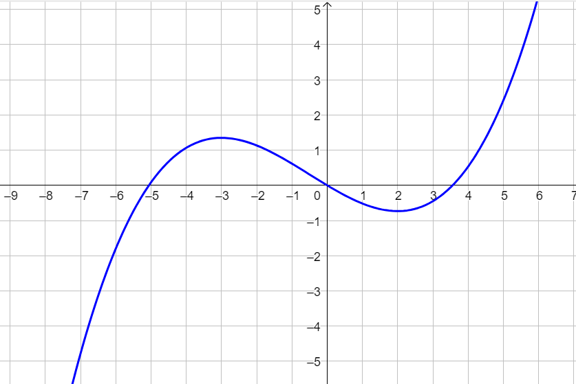
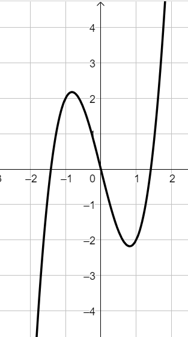
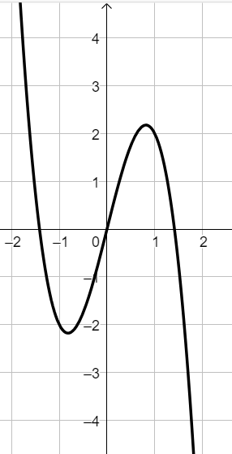
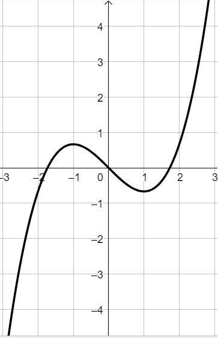

Compiti per casa
Esercizio 0
Ripassare i paragrafi 2 e 3
delle dispense dell'anno scorso disponibili QUA
Esercizio 1
Consideriamo la funzione \(f\) avente il seguente grafico

Stabilire se le affermazioni di seguito sono corrette.
Motivare la risposta (sul quaderno).
-
\(f(3) \approx 0.4 \)
-
\(f(x) \geq 0\,\,\,\) se \(\,\,\,x \in \Big[-5\,;\,\,0\Big] \cup \Big[3\,;\,\,+\infty\Big)\)
-
\(f'(x) \lt 0\,\,\,\) se \(\,\,\, -3 \lt x \lt 2\)
Esercizio 2
Dopo aver calcolato la derivata della funzione
\[
f(x) = 2x^3 - 4x
\]
stabilire per quali valori della \(x\) essa assume valori positivi.
Sfruttando il risultato ottenuto, individuare tra i seguenti l'unico grafico che
potrebbe rappresentare la funzione.
Grafico A)

Grafico B)

Grafico C)

Esercizio 1
Calcolare la derivata delle seguenti funzioni
-
\(\left(5x^6 - 5sin\left(x\right)\right)^{'} \)
Soluzione:
\[
30x^5 -5cos\left(x\right)
\]
-
\(\left(5\,\sqrt[7]{x^2} + 2\,ln\left(x\right)\right)^{'} \)
Soluzione:
\[
\dfrac{10}{7\,\sqrt[7]{x^5}} + \dfrac{2}{x} = \dfrac{10 \sqrt[7]{x^2} + 14}{7x}
\]
-
\(\left(\dfrac{5}{\sqrt{x}} + arctan\left(x\right)\right)^{'} \)
Soluzione:
\[
-\dfrac{5}{2\sqrt{x^3}} + \dfrac{1}{x^2 + 1}
\]
-
\(\left(6x^2 + 5x +3 - 5\,ln\left(x\right)\right)^{'} \)
Soluzione:
\[
12x + 5 - \dfrac{5}{x} = \dfrac{12x^2 + 5x - 5}{x}
\]